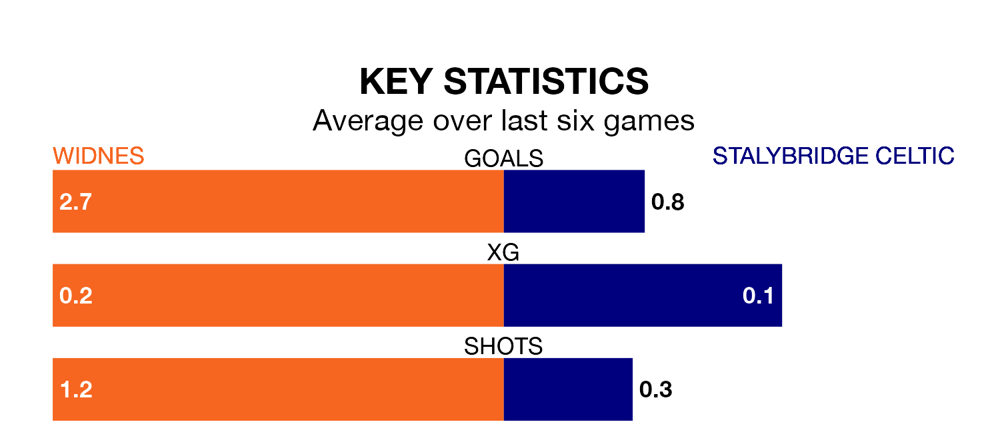

Widnes host Stalybridge Celtic on Saturday on the back of three consecutive wins in the Northern Premier League Division One West.
Widnes have picked up 12 points from their last six games, and they face a Stalybridge Celtic side who lost their last match, and have collected six points from the last possible 18.
With 37 goals in 25 games so far this season, Widnes are scoring more than average in the league with 1.5 goals per game. And they are conceding fewer than average, letting in 24 goals at a rate of 1.0 per game.
Stalybridge Celtic are also above average scorers, with 1.5 goals per game, compared to a league average of 1.4. They have conceded 1.3 goals per game.
The visitors are sixth in the table after 26 games, of which they have won 10 and drawn nine, earning 39 points.
The Whites are three places behind Stalybridge Celtic in ninth, with 11 wins and four draws putting them on 37 points.
Widnes's last match was on February 3, a 3-1 win against Newcastle Town, with getting the goals for the Whites.
Stalybridge Celtic lost 3-0 against Witton Albion last time out, also on February 3.
Updated: 10:28 (UTC), 06/02/24